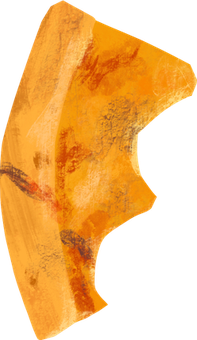
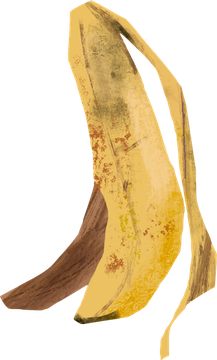
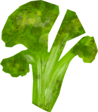

<!DOCTYPE html>
<html lang="pt-BR">
  <head>
    <meta charset="UTF-8" />
    <meta name="viewport" content="width=device-width, initial-scale=1.0" />
    <title>Da Cozinha à Consciência | Jogos Interativos UFPA (6º Ano)</title>
    <script src="https://cdn.tailwindcss.com"></script>
    <script src="https://unpkg.com/react@18/umd/react.production.min.js" crossorigin></script>
    <script src="https://unpkg.com/react-dom@18/umd/react-dom.production.min.js" crossorigin></script>
    <script src="https://unpkg.com/@babel/standalone/babel.min.js"></script>
    <script src="https://cdn.jsdelivr.net/npm/canvas-confetti@1.9.3/dist/confetti.browser.min.js"></script>
    <link rel="preconnect" href="https://fonts.googleapis.com">
    <link rel="preconnect" href="https://fonts.gstatic.com" crossorigin>
    <link href="https://fonts.googleapis.com/css2?family=DM+Sans:ital,opsz,wght@0,9..40,400..800;1,9..40,400..800&family=Fredoka:wght@500;600;700&family=Gloria+Hallelujah&display=swap" rel="stylesheet">
    <style>
      body {
        font-family: 'DM Sans', sans-serif;
        background-color: #4E6E3E;
        background-image: url('./public/assets/slides/bg-green.jpg');
        background-size: cover;
        background-attachment: fixed;
        background-position: center;
        color: #3A2920;
        min-height: 100vh;
      }
      .font-hand { font-family: 'Gloria Hallelujah', cursive; }
      .font-display { font-family: 'Fredoka', sans-serif; }
      .torn-paper {
        background-color: #F1DBB8;
        background-image: url('./public/assets/slides/paper-main.png');
        background-size: 100% 100%;
        border: 3px solid #D5BC93;
        box-shadow: 0 12px 28px rgba(26, 16, 10, 0.38);
        border-radius: 20px;
      }
      .torn-banner {
        background-color: #3D531B;
        background-image: url('./public/assets/slides/banner-green.png');
        background-size: cover;
        color: #F1DBB8;
        box-shadow: 0 6px 16px rgba(26, 16, 10, 0.4);
        border-bottom: 3px solid #283810;
      }
    </style>
  </head>
  <body>
    <div id="root"></div>
    <script type="text/babel">
      const { useState } = React;
      window. confetti = window.confetti || (() => {});


const SORTING_ITEMS = [
  {
    id: 'item-1',
    name: 'Cascas de Macaxeira, Abóbora e Cenoura (Higienizadas)',
    emoji: '🥕',
    illust: './public/assets/slides/illust-carrot.png',
    origin: 'Corte de legumes da merenda (Slide 14)',
    category: 'aproveitamento',
    explanation: 'Cascas bem lavadas de raízes e legumes entram no Aproveitamento Integral dos Alimentos (caldos nutritivos, farofas e bolinhos) ou podem ir para a compostagem!',
    points: 100
  },
  {
    id: 'item-2',
    name: 'Garrafa Plástica de Suco Vazia',
    emoji: '🧴',
    origin: 'Exemplo clássico do Slide 4',
    category: 'reciclavel',
    explanation: 'Como vimos no Slide 4, uma garrafa plástica vazia não é "lixo sem valor"! Encaminhada à coleta seletiva, ela é reciclada para produzir novos materiais.',
    points: 100
  },
  {
    id: 'item-3',
    name: 'Borra de Café e Folhas Secas do Pátio',
    emoji: '☕',
    illust: './public/assets/slides/illust-herbs.png',
    origin: 'Cozinha e pátio escolar (Slide 10)',
    category: 'compostagem',
    explanation: 'Borra de café, folhas e podas vão para a Composteira e viram adubo rico em nutrientes. Nossa horta escolar agradece!',
    points: 100
  },
  {
    id: 'item-4',
    name: 'Talos de Cheiro-Verde, Couve e Brócolis',
    emoji: '🥦',
    illust: './public/assets/slides/illust-leaves.png',
    origin: 'Preparo do almoço escolar (Slides 9 e 14)',
    category: 'aproveitamento',
    explanation: 'Aproveite todas as partes dos alimentos! Talos de cheiro-verde, cenoura e brócolis são riquíssimos em fibras e vitaminas para arroz verde, sopas e tortas.',
    points: 100
  },
  {
    id: 'item-5',
    name: 'Cascas de Banana, Laranja e Melancia',
    emoji: '🍌',
    illust: './public/assets/slides/illust-banana.png',
    origin: 'Sobremesa da merenda (Slide 14)',
    category: 'compostagem',
    explanation: 'As cascas de frutas geradas em grande volume na escola podem ser compostadas para gerar adubo natural para a nossa horta!',
    points: 100
  },
  {
    id: 'item-6',
    name: 'Latas de Alumínio e Embalagens Metálicas Limpas',
    emoji: '🥫',
    origin: 'Despensa da cozinha (Slide 10)',
    category: 'reciclavel',
    explanation: 'Plásticos, metais, papéis, vidros e embalagens limpas são Resíduos Recicláveis e voltam ao ciclo produtivo com valor econômico!',
    points: 100
  },
  {
    id: 'item-7',
    name: 'Sementes de Abóbora e Tomate para Receitas',
    emoji: '🍅',
    illust: './public/assets/slides/illust-apple.png',
    origin: 'Preparo da merenda (Slide 9)',
    category: 'aproveitamento',
    explanation: 'No aproveitamento integral dos alimentos (Slide 9), sementes e partes comestíveis evitam o desperdício e enriquecem novas receitas!',
    points: 100
  },
  {
    id: 'item-8',
    name: 'Caixas de Papelão e Papéis Limpos',
    emoji: '📦',
    origin: 'Secretaria e despensa (Slide 10)',
    category: 'reciclavel',
    explanation: 'Papéis e caixas limpas e secas devem ser separados para a coleta seletiva, evitando o corte de novas árvores.',
    points: 100
  },
  {
    id: 'item-9',
    name: 'Miolo de Maçã e Restos Orgânicos do Prato',
    emoji: '🍎',
    illust: './public/assets/slides/illust-roots.png',
    origin: 'Refeitório escolar (Slides 9 e 10)',
    category: 'compostagem',
    explanation: 'Restos de alimentos orgânicos que não podem mais ser consumidos vão para a compostagem — e lembre-se do lema: "Sirva apenas o que vai consumir!"',
    points: 100
  }
];

const LIGHTNING_QUIZ_GAME1 = [
  {
    id: 'q1',
    question: 'Na apresentação da UFPA, aprendemos que "resíduo sólido" e "lixo sem valor" NÃO são a mesma coisa. Por quê?',
    context: 'Conceito fundamental dos Slides 3 e 4',
    options: [
      'Porque resíduos sólidos são materiais que ainda têm valor e podem ser reutilizados, reciclados ou compostados.',
      'Porque resíduo sólido é apenas o que sobra nos hospitais e indústrias químicas.',
      'Porque todo resíduo sólido deve ser queimado em terrenos baldios.',
      'Porque o descarte errado não causa nenhum impacto ambiental.'
    ],
    correctIndex: 0,
    explanation: 'Exato! Muitos materiais descartados ainda possuem valor econômico e ambiental, podendo voltar ao ciclo produtivo via reciclagem, reutilização ou compostagem.',
    slideRef: 'Slides 3 e 4'
  },
  {
    id: 'q2',
    question: 'Durante o preparo da merenda, a cozinha gera muitas cascas, talos e sementes. Quais são as DUAS melhores soluções ensinadas no Slide 9 para esses materiais?',
    context: 'Para onde tudo isso vai? (Slide 9)',
    options: [
      'Jogar tudo no rio mais próximo ou esconder debaixo da terra.',
      'Aproveitamento integral dos alimentos (novas receitas) e Compostagem (transformar em adubo para a horta).',
      'Misturar as cascas de frutas com garrafas plásticas e vidros quebrados.',
      'Proibir o uso de frutas, raízes e verduras na merenda da escola.'
    ],
    correctIndex: 1,
    explanation: 'Perfeito! O Slide 9 destaca o planejamento das porções, o aproveitamento integral dos alimentos em novas receitas e a compostagem para gerar adubo!',
    slideRef: 'Slides 9 e 10'
  },
  {
    id: 'q3',
    question: 'No refeitório da escola, qual atitude de cada aluno do 6º ano ajuda diretamente a reduzir o desperdício de comida todos os dias?',
    context: 'Pequenas escolhas, grandes mudanças! (Slide 10)',
    options: [
      'Encher o prato até transbordar mesmo sem estar com fome.',
      'Jogar a fruta inteira no lixo comum para sair mais rápido para o recreio.',
      'Servir de forma consciente, colocando no prato apenas a quantidade que realmente vai consumir.',
      'Deixar a responsabilidade apenas para as merendeiras da cozinha.'
    ],
    correctIndex: 2,
    explanation: 'Muito bem! "Sirva consciente. Aproveite melhor. Sirva apenas o que vai consumir!" Assim evitamos que comida boa vire desperdício.',
    slideRef: 'Slide 10'
  }
];

const KITCHEN_SURVEY_MISSIONS = [
  {
    id: 1,
    stepTitle: 'Pergunta 1: O Volume Diário de Preparo',
    slideNumber: 11,
    surveyQuestion: '"Em média, quantos quilos (ou baldes) de resíduos orgânicos (cascas, talos, sementes e aparas) são gerados aqui na cozinha por dia, apenas preparando a merenda?"',
    excelOutput: 'Gráfico mostrando o "Volume Diário de Resíduos da Cozinha em kg", ajudando a ver a quantidade exata gerada por dia.',
    kitchenReport: 'Dona Nazaré, chefe da cozinha, anotou com a turma: "Crianças, nós usamos baldes de 4 kg. No preparo de hoje enchemos 3 baldes inteiros só de cascas e talos!"',
    recommendedChart: 'bar-daily',
    chartData: [
      { label: 'Balde 1 (Raízes)', value: 4, color: '#ED9527', unit: 'kg' },
      { label: 'Balde 2 (Frutas)', value: 4, color: '#CCA151', unit: 'kg' },
      { label: 'Balde 3 (Talos/Folhas)', value: 4, color: '#67960E', unit: 'kg' },
      { label: 'Total Diário', value: 12, color: '#3D531B', unit: 'kg' }
    ],
    chartTypeQuestion: {
      prompt: 'De acordo com o Slide 11, o que essa primeira pergunta do questionário rende quando levamos os dados para o Excel?',
      options: [
        'Um gráfico mostrando o "Volume Diário de Resíduos da Cozinha em kg".',
        'Uma lista secreta com as notas de matemática da turma.',
        'Um mapa de ruas do bairro da escola.'
      ],
      correctIndex: 0
    },
    interpretationQuestion: {
      prompt: 'Se a cozinha encheu 3 baldes de 4 kg por dia (12 kg diários), quantos quilos de resíduos orgânicos serão gerados em uma semana escolar de 5 dias (segunda a sexta)?',
      options: [
        '15 kg na semana',
        '30 kg na semana',
        '60 kg na semana',
        '120 kg na semana'
      ],
      correctIndex: 2,
      explanation: 'Cálculo certeiro de 6º ano! 12 kg por dia × 5 dias de aula = 60 kg de resíduos orgânicos por semana que podem virar adubo na composteira!'
    }
  },
  {
    id: 2,
    stepTitle: 'Pergunta 2: O Dia de Maior Geração',
    slideNumber: 12,
    surveyQuestion: '"Em qual dia da semana vocês percebem que a cozinha enche mais baldes de cascas e resíduos? E em qual dia gera menos?"',
    excelOutput: 'Um gráfico de colunas comparando segunda a sexta.',
    kitchenReport: 'A equipe da cozinha mostrou a planilha da semana: Segunda (10 kg), Terça (14 kg), Quarta (18 kg - Dia de Sopão!), Quinta (12 kg) e Sexta (6 kg - Dia de Mingau).',
    recommendedChart: 'column-week',
    chartData: [
      { label: 'Segunda', value: 10, color: '#67960E', unit: 'kg' },
      { label: 'Terça', value: 14, color: '#CCA151', unit: 'kg' },
      { label: 'Quarta', value: 18, color: '#AC300F', unit: 'kg' },
      { label: 'Quinta', value: 12, color: '#ED9527', unit: 'kg' },
      { label: 'Sexta', value: 6, color: '#3D531B', unit: 'kg' }
    ],
    chartTypeQuestion: {
      prompt: 'Segundo o Slide 12, qual tipo de gráfico do Excel é ideal para comparar a geração de resíduos de segunda a sexta-feira?',
      options: [
        'Um gráfico de colunas comparando segunda a sexta.',
        'Um texto sem números.',
        'Uma fotografia preta e branca.'
      ],
      correctIndex: 0
    },
    interpretationQuestion: {
      prompt: 'Olhando para o Gráfico de Colunas acima, qual é a diferença em quilos entre o dia que MAIS gera resíduos (Quarta-feira) e o dia que MENOS gera (Sexta-feira)?',
      options: [
        '8 kg de diferença',
        '12 kg de diferença',
        '18 kg de diferença',
        '24 kg de diferença'
      ],
      correctIndex: 1,
      explanation: 'Isso mesmo! Quarta-feira (18 kg) menos Sexta-feira (6 kg) = 12 kg de diferença! Os gráficos de colunas ajudam a visualizar rapidamente esses picos.'
    }
  },
  {
    id: 3,
    stepTitle: 'Pergunta 3: O Impacto do Cardápio',
    slideNumber: 13,
    surveyQuestion: '"Pensando no cardápio da escola, qual é a refeição ou prato que dá mais trabalho de corte e gera mais volume de cascas e talos?"',
    excelOutput: 'Um gráfico classificando "Os pratos que mais geram resíduos orgânicos".',
    kitchenReport: 'As merendeiras listaram os 3 pratos campeões de cascas e talos: 1º Sopa de Carne com Macaxeira e Legumes (18 kg), 2º Picadinho com Salada de Frutas (15 kg) e 3º Arroz com Frango e Cenoura (9 kg).',
    recommendedChart: 'ranking-dishes',
    chartData: [
      { label: '1º Sopa c/ Macaxeira e Legumes', value: 18, color: '#AC300F', unit: 'kg' },
      { label: '2º Picadinho + Salada de Frutas', value: 15, color: '#ED9527', unit: 'kg' },
      { label: '3º Arroz c/ Frango e Cenoura', value: 9, color: '#67960E', unit: 'kg' }
    ],
    chartTypeQuestion: {
      prompt: 'Para que serve anotar os 2 ou 3 pratos que dão mais trabalho de corte e geram mais cascas na cozinha (Slide 13)?',
      options: [
        'Para criar no Excel um gráfico classificando "Os pratos que mais geram resíduos orgânicos" e planejar o reaproveitamento.',
        'Para proibir a merendeira de cozinhar legumes na escola.',
        'Para jogar todas as verduras cruas no lixo.'
      ],
      correctIndex: 0
    },
    interpretationQuestion: {
      prompt: 'Por que a "Sopa com Macaxeira e Legumes" aparece em 1º lugar no gráfico de geração de resíduos da cozinha?',
      options: [
        'Porque ninguém gosta de tomar sopa na escola.',
        'Porque utiliza muitas raízes, legumes e temperos verdes in natura que precisam ser descascados e cortados.',
        'Porque a sopa vem dentro de garrafas plásticas.',
        'Porque não usa nenhum ingrediente de origem vegetal.'
      ],
      correctIndex: 1,
      explanation: 'Perfeito! Pratos com raízes (macaxeira, batata) e legumes frescos geram muitas cascas e talos — que são excelentes para compostagem e receitas de aproveitamento integral!'
    }
  },
  {
    id: 4,
    stepTitle: 'Pergunta 4: A Composição do Resíduo',
    slideNumber: 14,
    surveyQuestion: '"Se a gente olhasse para o balde de resíduos de vocês no fim do dia, qual desses itens estaria em maior quantidade?"',
    excelOutput: 'Um gráfico de pizza excelente mostrando "Do que é feito o resíduo da nossa cozinha".',
    kitchenReport: 'Ao analisar o balde do fim do dia, a turma descobriu: 50% são Cascas de raízes e legumes (batata, cenoura, macaxeira), 35% são Cascas de frutas (banana, laranja, melancia) e 15% são Talos e folhas (cheiro-verde, folhas duras).',
    recommendedChart: 'pie-composition',
    chartData: [
      { label: 'Cascas de raízes/legumes (batata, cenoura, macaxeira)', value: 50, color: '#ED9527', unit: '%' },
      { label: 'Cascas de frutas (banana, laranja, melancia)', value: 35, color: '#CCA151', unit: '%' },
      { label: 'Talos e folhas (cheiro-verde, folhas duras)', value: 15, color: '#67960E', unit: '%' }
    ],
    chartTypeQuestion: {
      prompt: 'Qual gráfico do Excel o Slide 14 recomenda para mostrar as fatias de "Do que é feito o resíduo da nossa cozinha"?',
      options: [
        'Um gráfico de pizza excelente mostrando a proporção de cada tipo de resíduo.',
        'Uma tabela em branco sem números.',
        'Um cronômetro regressivo.'
      ],
      correctIndex: 0
    },
    interpretationQuestion: {
      prompt: 'No gráfico de pizza acima, qual grupo representa sozinho a METADE (50%) de todo o resíduo orgânico gerado no balde da cozinha?',
      options: [
        'Talos e folhas de cheiro-verde (15%)',
        'Cascas de frutas como banana, laranja e melancia (35%)',
        'Cascas e pedaços de raízes/legumes como batata, cenoura e macaxeira (50%)',
        'Garrafas plásticas e latinhas (0%)'
      ],
      correctIndex: 2,
      explanation: 'Exatamente! 50% equivale à metade do gráfico de pizza: as cascas e pedaços de raízes e legumes (batata, cenoura, macaxeira) lideram o volume no balde!'
    }
  },
  {
    id: 5,
    stepTitle: 'Pergunta 5: O Destino Atual e a Mudança',
    slideNumber: 15,
    surveyQuestion: '"Hoje, o que acontece com todas essas cascas e talos que sobram do preparo?" ( ) Lixo comum ( ) Animais ( ) Outro destino.',
    excelOutput: 'Informação-chave para os cartazes e HQs de conscientização da 3ª Etapa!',
    kitchenReport: 'Antes do projeto, 80% das cascas iam para o lixo comum da escola e apenas 20% alguém levava para alimentar animais. Com a nossa missão da UFPA, queremos levar 100% para Compostagem, Horta e Reaproveitamento!',
    recommendedChart: 'destination-cards',
    chartData: [
      { label: 'Lixo Comum (Antes do Projeto)', value: 80, color: '#AC300F', unit: '%' },
      { label: 'Alimentação de Animais', value: 20, color: '#CCA151', unit: '%' },
      { label: 'Meta: Compostagem + Horta Escolar', value: 100, color: '#67960E', unit: '%' }
    ],
    chartTypeQuestion: {
      prompt: 'De acordo com o Slide 15, por que descobrir "O Destino Atual" das cascas e talos é tão importante para os grupos?',
      options: [
        'Porque é uma informação-chave para criar os cartazes e as Histórias em Quadrinhos (HQs) de conscientização!',
        'Porque serve apenas para decorar o caderno e depois esquecer.',
        'Porque não tem relação com o meio ambiente.'
      ],
      correctIndex: 0
    },
    interpretationQuestion: {
      prompt: 'Se a escola substituir o envio das cascas ao "lixo comum" pela COMPOSTAGEM na própria escola, qual será o benefício direto citado no Slide 10?',
      options: [
        'Os resíduos orgânicos viram adubo rico e fortalecem a nossa horta escolar ("Nossa horta agradece!").',
        'O pátio da escola ficará cheio de fumaça.',
        'As plantas da horta vão parar de crescer.',
        'O desperdício de comida no refeitório vai aumentar.'
      ],
      correctIndex: 0,
      explanation: 'Brilhante! Como diz o Slide 10: "Resíduos orgânicos viram adubo! Composte sempre. Nossa horta agradece!"'
    }
  }
];

const COMIC_PANELS = [
  {
    id: 1,
    panelTitle: 'Quadrinho 1: O Chamado da UFPA',
    stageTag: 'Protagonismo Jovem (Slide 2)',
    sceneEmoji: '🎓🌱',
    illust: './public/assets/slides/ufpa-crest.png',
    characterName: 'Clarice & Lucas (6º Ano)',
    characterRole: 'Agentes de Transformação',
    situation: 'O projeto "Da Cozinha à Consciência" da UFPA chegou na escola! A turma descobriu que não é apenas espectadora.',
    speechPrompt: 'Complete o balão de fala da Clarice explicando o papel dos alunos no projeto:',
    options: [
      {
        text: '"Nós não somos apenas alunos! Somos agentes de transformação e educadores ambientais capazes de propor soluções reais para a nossa escola!"',
        isCorrect: true,
        feedback: 'Perfeito! Você usou exatamente o conceito de Protagonismo Jovem dos Slides 2 e 10!'
      },
      {
        text: '"Cuidar do meio ambiente é tarefa exclusiva dos adultos, então não precisamos fazer nada na escola."',
        isCorrect: false,
        feedback: 'Ops! No Slide 2 aprendemos que os alunos são protagonistas e agentes de transformação!'
      },
      {
        text: '"Vamos guardar esse conhecimento em segredo e não contar para nenhuma outra turma."',
        isCorrect: false,
        feedback: 'Lembre-se: a meta é compartilhar o conhecimento com toda a escola!'
      }
    ]
  },
  {
    id: 2,
    panelTitle: 'Quadrinho 2: Lixo ou Resíduo Sólido?',
    stageTag: 'Conceito-Chave (Slides 3, 4 e 8)',
    sceneEmoji: '♻️🧴',
    illust: './public/assets/slides/eco-badge.png',
    characterName: 'Pedro (Detetive Ambiental)',
    characterRole: 'Explicando o que são Resíduos Sólidos',
    situation: 'No pátio, um colega ia jogar uma garrafa plástica vazia em um canto qualquer, chamando-a de "lixo sem valor".',
    speechPrompt: 'Qual fala do Pedro responde corretamente "O que são os resíduos sólidos?" na nossa HQ?',
    options: [
      {
        text: '"Espera! Resíduo sólido não é lixo sem valor! Essa garrafa plástica pode ir para a coleta seletiva, ser reciclada e virar novos produtos!"',
        isCorrect: true,
        feedback: 'Show! Essa é a primeira pergunta obrigatória da HQ do Slide 8 explicada com o exemplo do Slide 4!'
      },
      {
        text: '"Pode jogar no terreno baldio, porque o plástico desaparece sozinho em dois minutos."',
        isCorrect: false,
        feedback: 'Cuidado! O descarte errado gera graves impactos ambientais e à saúde pública (Slide 3).'
      },
      {
        text: '"Garrafa plástica deve ser misturada com casca de banana dentro da horta."',
        isCorrect: false,
        feedback: 'Garrafa plástica é resíduo reciclável seco, não orgânico!'
      }
    ]
  },
  {
    id: 3,
    panelTitle: 'Quadrinho 3: A Investigação na Cozinha',
    stageTag: '1ª e 2ª Etapas (Slides 6 e 7)',
    sceneEmoji: '📋👩‍🍳',
    illust: './public/assets/slides/illust-veggies.png',
    characterName: 'Dona Nazaré & Grupo de Pesquisa',
    characterRole: 'Coleta de Dados e Excel',
    situation: 'Com o formulário em mãos, o grupo entrevistou a equipe da cozinha e levou os números para as planilhas do Excel.',
    speechPrompt: 'Complete o balão que explica como o grupo descobriu a realidade do desperdício na escola:',
    options: [
      {
        text: '"Adivinhamos os números de cabeça sem conversar com ninguém da cozinha."',
        isCorrect: false,
        feedback: 'Na 1ª Etapa nós fomos a campo entrevistar a equipe da cozinha com o questionário!'
      },
      {
        text: '"Entrevistamos a cozinha sobre os baldes de cascas de macaxeira, frutas e talos, e transformamos tudo em gráficos de colunas e pizza no Excel!"',
        isCorrect: true,
        feedback: 'Excelente! Você conectou a entrevista de campo (1ª Etapa) com os gráficos digitais no Excel (2ª Etapa)!'
      },
      {
        text: '"Descobrimos que a cozinha não usa nenhuma fruta ou legume na merenda."',
        isCorrect: false,
        feedback: 'Pelo contrário! A cozinha gera quilos de cascas e talos preparando a merenda todos os dias.'
      }
    ]
  },
  {
    id: 4,
    panelTitle: 'Quadrinho 4: O Poder do Aproveitamento Integral',
    stageTag: 'Menos Desperdício (Slides 9 e 10)',
    sceneEmoji: '🥕🍲',
    illust: './public/assets/slides/illust-carrot.png',
    characterName: 'Chef Mirim Tiago',
    characterRole: 'Reaproveitamento de Alimentos',
    situation: 'Muitas cascas limpas, talos de cheiro-verde e sementes nutritivas iam parar no lixo comum por falta de informação.',
    speechPrompt: 'Como o personagem da HQ ensina a reaproveitar os alimentos na cozinha?',
    options: [
      {
        text: '"Com o aproveitamento integral, usamos todas as partes nutritivas dos alimentos — cascas, talos e sementes — para criar novas receitas deliciosas!"',
        isCorrect: true,
        feedback: 'Mandou muito bem! "Aproveite todas as partes dos alimentos! Sobras de alimentos viram novas receitas" (Slides 9 e 10).'
      },
      {
        text: '"A única parte boa dos legumes é o meio; todas as folhas e talos devem ir para o caminhão de lixo."',
        isCorrect: false,
        feedback: 'Talos e folhas possuem muitas vitaminas e fibras e podem ser reaproveitados!'
      },
      {
        text: '"Para não ter cascas, devemos comer apenas biscoito embalado em plástico."',
        isCorrect: false,
        feedback: 'Alimentos naturais são saudáveis e suas cascas podem ser reaproveitadas ou compostadas!'
      }
    ]
  },
  {
    id: 5,
    panelTitle: 'Quadrinho 5: Da Composteira para a Horta!',
    stageTag: 'Compostagem (Slides 9 e 10)',
    sceneEmoji: '🪱🌻',
    illust: './public/assets/slides/illust-banana.png',
    characterName: 'Bia (Guardiã da Horta)',
    characterRole: 'Separação e Compostagem',
    situation: 'E aquelas cascas de banana, borra de café e folhas secas que não entraram nas receitas? Elas têm um destino nobre!',
    speechPrompt: 'Escolha a fala que mostra como a compostagem ajuda a natureza e a escola:',
    options: [
      {
        text: '"Quando separamos os resíduos orgânicos (cascas, borra de café e folhas) para a compostagem, eles viram um adubo rico! Nossa horta escolar agradece!"',
        isCorrect: true,
        feedback: 'Perfeito! Você respondeu à pergunta "Como a compostagem ajuda a natureza?" do Slide 10!'
      },
      {
        text: '"Misturamos vidro e plástico com casca de banana para fazer adubo artificial."',
        isCorrect: false,
        feedback: 'Na composteira entram apenas resíduos orgânicos! Plástico e vidro vão para a reciclagem.'
      },
      {
        text: '"Queimamos as folhas e cascas no pátio para produzir fumaça."',
        isCorrect: false,
        feedback: 'Queimar resíduos polui o ar e desperdiça nutrientes que virariam adubo na compostagem.'
      }
    ]
  },
  {
    id: 6,
    panelTitle: 'Quadrinho 6: A Grande Exposição no Pátio!',
    stageTag: '3ª Etapa (Slide 10)',
    sceneEmoji: '🎨🏫',
    illust: './public/assets/slides/illust-leaves.png',
    characterName: 'Toda a Turma do 6º Ano',
    characterRole: 'Educadores Ambientais na Escola',
    situation: 'Chegou o dia da Grande Exposição das HQs no refeitório e no pátio! Todas as turmas vieram ver os gráficos e quadrinhos.',
    speechPrompt: 'Qual mensagem final encerra a nossa HQ para transformar os hábitos da escola?',
    options: [
      {
        text: '"Sirva consciente, coloque no prato apenas o que vai consumir, separe os resíduos e composte sempre! A mudança da escola começa pelas nossas mãos!"',
        isCorrect: true,
        feedback: 'FINAL ÉPICO! Você reuniu todos os lemas do Slide 10 ("Sirva consciente", "Separe corretamente", "A mudança da escola começa pelas mãos de vocês!").'
      },
      {
        text: '"A exposição acabou, então a partir de amanhã podemos voltar a desperdiçar merenda."',
        isCorrect: false,
        feedback: 'Nossa Meta Real no Slide 10 é ir além do papel e promover uma mudança de hábito permanente!'
      },
      {
        text: '"Só quem participou do grupo precisa separar os resíduos no refeitório."',
        isCorrect: false,
        feedback: 'A exposição nos espaços de maior circulação serve justamente para envolver todas as outras turmas!'
      }
    ]
  }
];

      // Simple sound helper
      const sound = {
        muted: false,
        ctx: null,
        init() {
          if (!this.ctx) {
            const Ctx = window.AudioContext || window.webkitAudioContext;
            if (Ctx) this.ctx = new Ctx();
          }
        },
        playSuccess() {
          if (this.muted) return;
          this.init();
          if (!this.ctx) return;
          const now = this.ctx.currentTime;
          [523.25, 659.25, 783.99, 1046.5].forEach((freq, i) => {
            const osc = this.ctx.createOscillator();
            const gain = this.ctx.createGain();
            osc.type = 'triangle';
            osc.frequency.setValueAtTime(freq, now + i * 0.07);
            gain.gain.setValueAtTime(0.15, now + i * 0.07);
            gain.gain.exponentialRampToValueAtTime(0.001, now + i * 0.07 + 0.22);
            osc.connect(gain);
            gain.connect(this.ctx.destination);
            osc.start(now + i * 0.07);
            osc.stop(now + i * 0.07 + 0.23);
          });
        },
        playError() {
          if (this.muted) return;
          this.init();
          if (!this.ctx) return;
          const now = this.ctx.currentTime;
          [260, 195].forEach((freq, i) => {
            const osc = this.ctx.createOscillator();
            const gain = this.ctx.createGain();
            osc.type = 'sawtooth';
            osc.frequency.setValueAtTime(freq, now + i * 0.12);
            gain.gain.setValueAtTime(0.12, now + i * 0.12);
            gain.gain.exponentialRampToValueAtTime(0.001, now + i * 0.12 + 0.25);
            osc.connect(gain);
            gain.connect(this.ctx.destination);
            osc.start(now + i * 0.12);
            osc.stop(now + i * 0.12 + 0.26);
          });
        },
        playVictory() {
          if (this.muted) return;
          this.init();
          if (!this.ctx) return;
          const notes = [523.25, 659.25, 783.99, 1046.5, 783.99, 1046.5];
          const now = this.ctx.currentTime;
          notes.forEach((freq, i) => {
            const osc = this.ctx.createOscillator();
            const gain = this.ctx.createGain();
            osc.type = 'sine';
            osc.frequency.setValueAtTime(freq, now + i * 0.1);
            gain.gain.setValueAtTime(0.18, now + i * 0.1);
            gain.gain.exponentialRampToValueAtTime(0.001, now + i * 0.1 + 0.3);
            osc.connect(gain);
            gain.connect(this.ctx.destination);
            osc.start(now + i * 0.1);
            osc.stop(now + i * 0.1 + 0.32);
          });
        }
      };

      const Icon = ({ symbol }) => <span className="inline-block">{symbol}</span>;
      const Home = () => <Icon symbol="🏠" />;
      const Users = () => <Icon symbol="👥" />;
      const Trophy = () => <Icon symbol="🏆" />;
      const Volume2 = () => <Icon symbol="🔊" />;
      const VolumeX = () => <Icon symbol="🔇" />;
      const Sparkles = () => <Icon symbol="✨" />;
      const Recycle = () => <Icon symbol="♻️" />;
      const BarChart3 = () => <Icon symbol="📊" />;
      const BookOpen = () => <Icon symbol="📖" />;
      const ArrowRight = () => <Icon symbol="➔" />;
      const RotateCcw = () => <Icon symbol="🔄" />;
      const Utensils = () => <Icon symbol="🍲" />;
      const Leaf = () => <Icon symbol="🌱" />;
      const CheckCircle2 = () => <Icon symbol="✅" />;
      const XCircle = () => <Icon symbol="❌" />;
      const Award = () => <Icon symbol="🏅" />;

 = [
  { id: 't1', name: 'Equipe Macaxeira', emoji: '🥕', score: 0, badges: [] },
  { id: 't2', name: 'Guardiões da Horta', emoji: '🌱', score: 0, badges: [] },
  { id: 't3', name: 'Detetives UFPA', emoji: '🔍', score: 0, badges: [] }
];

function App() {
  const [screen, setScreen] = useState('home');
  const [teams, setTeams] = useState(INITIAL_TEAMS);
  const [activeTeamIdx, setActiveTeamIdx] = useState(0);
  const [muted, setMuted] = useState(false);

  // Estados do Minijogo 1
  const [g1Index, setG1Index] = useState(0);
  const [g1Feedback, setG1Feedback] = useState(null);
  const [g1QuizIndex, setG1QuizIndex] = useState(null);
  const [g1QuizAnswered, setG1QuizAnswered] = useState(null);
  const [g1Completed, setG1Completed] = useState(false);

  // Estados do Minijogo 2
  const [g2MissionIdx, setG2MissionIdx] = useState(0);
  const [g2Step, setG2Step] = useState('chart-choice');
  const [g2SelectedOption, setG2SelectedOption] = useState(null);
  const [g2Completed, setG2Completed] = useState(false);

  // Estados do Minijogo 3
  const [g3PanelIdx, setG3PanelIdx] = useState(0);
  const [g3SelectedOption, setG3SelectedOption] = useState(null);
  const [g3CompletedPanels, setG3CompletedPanels] = useState([]);
  const [g3Slogan, setG3Slogan] = useState('Menos Desperdício, Mais Cuidado! Nossa Horta Agradece!');
  const [g3Completed, setG3Completed] = useState(false);

  const activeTeam = teams[activeTeamIdx];

  const addPoints = (pts, badge) => {
    setTeams((prev) =>
      prev.map((t, idx) => {
        if (idx !== activeTeamIdx) return t;
        const updatedBadges = badge && !t.badges.includes(badge) ? [...t.badges, badge] : t.badges;
        return { ...t, score: t.score + pts, badges: updatedBadges };
      })
    );
  };

  const toggleSound = () => {
    sound.muted = !muted;
    setMuted(!muted);
  };

  const triggerCelebration = () => {
    sound.playVictory();
    confetti({ particleCount: 90, spread: 70, origin: { y: 0.6 } });
  };

  const currentSortingItem = SORTING_ITEMS[g1Index];
  const handleSortChoice = (chosenCategory) => {
    if (g1Feedback) return;
    const isCorrect = chosenCategory === currentSortingItem.category;
    if (isCorrect) {
      sound.playSuccess();
      addPoints(currentSortingItem.points);
      setG1Feedback({ correct: true, text: currentSortingItem.explanation });
    } else {
      sound.playError();
      setG1Feedback({
        correct: false,
        text: `Quase! O destino ideal é "${
          currentSortingItem.category === 'compostagem'
            ? 'Composteira da Horta'
            : currentSortingItem.category === 'aproveitamento'
            ? 'Aproveitamento Integral na Cozinha'
            : 'Coleta Seletiva (Recicláveis)'
        }". ${currentSortingItem.explanation}`
      });
    }
  };

  const nextSortingStep = () => {
    setG1Feedback(null);
    if ((g1Index + 1) % 3 === 0 && g1QuizIndex === null) {
      const qIdx = Math.floor(g1Index / 3);
      if (qIdx < LIGHTNING_QUIZ_GAME1.length) {
        setG1QuizIndex(qIdx);
        setG1QuizAnswered(null);
        return;
      }
    }
    if (g1Index + 1 < SORTING_ITEMS.length) {
      setG1Index(g1Index + 1);
    } else {
      setG1Completed(true);
      addPoints(200, '🏅 Mestre da Separação');
      triggerCelebration();
    }
  };

  const handleG1QuizAnswer = (optIdx) => {
    if (g1QuizAnswered !== null || g1QuizIndex === null) return;
    setG1QuizAnswered(optIdx);
    const quiz = LIGHTNING_QUIZ_GAME1[g1QuizIndex];
    if (optIdx === quiz.correctIndex) {
      sound.playSuccess();
      addPoints(150);
    } else {
      sound.playError();
    }
  };

  const closeG1Quiz = () => {
    setG1QuizIndex(null);
    setG1QuizAnswered(null);
    if (g1Index + 1 < SORTING_ITEMS.length) {
      setG1Index(g1Index + 1);
    } else {
      setG1Completed(true);
      addPoints(200, '🏅 Mestre da Separação');
      triggerCelebration();
    }
  };

  const currentMission = KITCHEN_SURVEY_MISSIONS[g2MissionIdx];
  const handleG2Answer = (optIdx) => {
    if (g2SelectedOption !== null) return;
    setG2SelectedOption(optIdx);
    const correctIdx =
      g2Step === 'chart-choice'
        ? currentMission.chartTypeQuestion.correctIndex
        : currentMission.interpretationQuestion.correctIndex;

    if (optIdx === correctIdx) {
      sound.playSuccess();
      addPoints(150);
    } else {
      sound.playError();
    }
  };

  const nextG2Step = () => {
    setG2SelectedOption(null);
    if (g2Step === 'chart-choice') {
      setG2Step('data-question');
    } else {
      if (g2MissionIdx + 1 < KITCHEN_SURVEY_MISSIONS.length) {
        setG2MissionIdx(g2MissionIdx + 1);
        setG2Step('chart-choice');
      } else {
        setG2Completed(true);
        addPoints(250, '📊 Cientista de Dados da Cozinha');
        triggerCelebration();
      }
    }
  };

  const currentPanel = COMIC_PANELS[g3PanelIdx];
  const handleG3Answer = (optIdx) => {
    if (g3SelectedOption !== null) return;
    setG3SelectedOption(optIdx);
    const chosen = currentPanel.options[optIdx];
    if (chosen.isCorrect) {
      sound.playSuccess();
      addPoints(150);
    } else {
      sound.playError();
    }
  };

  const nextG3Panel = () => {
    const correctOpt = currentPanel.options.find((o) => o.isCorrect)!;
    setG3CompletedPanels((prev) => [
      ...prev,
      {
        title: currentPanel.panelTitle,
        emoji: currentPanel.sceneEmoji,
        speech: correctOpt.text
      }
    ]);
    setG3SelectedOption(null);
    if (g3PanelIdx + 1 < COMIC_PANELS.length) {
      setG3PanelIdx(g3PanelIdx + 1);
    } else {
      setG3Completed(true);
      addPoints(300, '🎨 Autor da Grande Exposição HQ');
      triggerCelebration();
    }
  };

  return (
    <div className="min-h-screen flex flex-col justify-between relative overflow-x-hidden pb-12">
      <header className="torn-banner sticky top-0 z-30 px-4 py-3">
        <div className="max-w-6xl mx-auto flex flex-wrap items-center justify-between gap-3">
          <div className="flex items-center gap-3">
            
            <button
              onClick={() => setScreen('home')}
              className="flex items-center gap-2 bg-[#F1DBB8] text-[#3A2920] px-3 py-1.5 rounded-xl font-bold shadow hover:scale-105 transition"
            >
              <Home className="w-5 h-5 text-[#3D531B]" />
              <span className="font-display">Início</span>
            </button>
            <div>
              <span className="text-xs uppercase tracking-wider text-[#CCA151] font-bold block">
                Projeto de Extensão • UFPA • 6º Ano
              </span>
              <h1 className="font-hand text-lg md:text-xl text-[#FFFAF0] leading-tight">
                Da Cozinha à Consciência — Gestão de Resíduos Sólidos
              </h1>
            </div>
          </div>

          <div className="flex items-center gap-2 flex-wrap">
            <div className="flex items-center bg-[#283810] px-3 py-1.5 rounded-xl border border-[#5E804D] gap-2">
              <Users className="w-4 h-4 text-[#ED9527]" />
              <span className="text-xs text-[#F1DBB8]">Equipe:</span>
              <select
                value={activeTeamIdx}
                onChange={(e) => setActiveTeamIdx(Number(e.target.value))}
                className="bg-[#F1DBB8] text-[#1A100A] font-bold text-xs px-2 py-1 rounded-lg cursor-pointer"
              >
                {teams.map((t, idx) => (
                  <option key={t.id} value={idx}>
                    {t.emoji} {t.name} ({t.score} pts)
                  </option>
                ))}
              </select>
            </div>

            <div className="bg-[#ED9527] text-[#1A100A] px-3 py-1.5 rounded-xl font-display font-bold text-sm flex items-center gap-1.5 shadow">
              <Trophy className="w-4 h-4" />
              <span>{activeTeam.score} pts</span>
            </div>

            <button
              onClick={toggleSound}
              className="p-2 rounded-xl bg-[#283810] text-[#F1DBB8] hover:bg-[#4E6E3E] transition"
              title="Alternar Som"
            >
              {muted ? <VolumeX className="w-5 h-5" /> : <Volume2 className="w-5 h-5" />}
            </button>
          </div>
        </div>
      </header>

      <main className="max-w-6xl w-full mx-auto px-4 mt-6 flex-1">
        {screen === 'home' && (
          <div className="space-y-8">
            <section className="torn-paper p-6 md:p-10 relative overflow-hidden">
              <div className="flex flex-col md:flex-row items-center justify-between gap-6">
                <div className="space-y-4 max-w-2xl">
                  <div className="inline-flex items-center gap-2 bg-[#3D531B] text-[#FFFAF0] px-4 py-1.5 rounded-full text-sm font-bold">
                    <Sparkles className="w-4 h-4 text-[#ED9527]" />
                    <span>Protagonismo Jovem • Vocês são Agentes de Transformação!</span>
                  </div>
                  <h2 className="font-hand text-3xl md:text-5xl text-[#3A2920] leading-tight">
                    Da Cozinha à Consciência
                  </h2>
                  <p className="text-base md:text-lg text-[#3A2920]/95 font-medium leading-relaxed">
                    Bem-vindos à plataforma interativa da nossa escola! Grande parte do que chamamos de
                    &ldquo;lixo&rdquo; são <strong>resíduos sólidos</strong> com valor que podem ser{' '}
                    <span className="underline decoration-[#3D531B] font-bold">
                      reutilizados, reciclados ou compostados
                    </span>
                    . Escolha um dos 3 minijogos abaixo para investigar a cozinha da escola!
                  </p>
                </div>

                <div className="bg-[#3D531B] text-[#FFFAF0] p-5 rounded-3xl border-4 border-[#CCA151] text-center shadow-xl max-w-xs w-full">
                  <div className="flex justify-center items-center gap-2 mb-2">
                    
                    
                    
                  </div>
                  <p className="font-hand text-lg text-[#F1DBB8]">Nossa Meta Real</p>
                  <p className="text-xs text-[#FFFAF0]/90 mt-1">
                    Ir além do papel: reduzir o desperdício diário da merenda, criar gráficos no Excel e
                    espalhar consciência com nossas HQs!
                  </p>
                </div>
              </div>
            </section>

            <section className="grid grid-cols-1 md:grid-cols-3 gap-4">
              {teams.map((team, idx) => (
                <div
                  key={team.id}
                  onClick={() => setActiveTeamIdx(idx)}
                  className={`torn-paper p-4 cursor-pointer transition transform hover:-translate-y-1 ${
                    activeTeamIdx === idx ? 'ring-4 ring-[#ED9527]' : 'opacity-90'
                  }`}
                >
                  <div className="flex items-center justify-between">
                    <div className="flex items-center gap-2">
                      <span className="text-3xl">{team.emoji}</span>
                      <div>
                        <h3 className="font-display font-bold text-lg text-[#1A100A]">{team.name}</h3>
                        <span className="text-xs font-bold text-[#3D531B]">
                          {activeTeamIdx === idx ? '● Equipe Ativa' : 'Clique para selecionar'}
                        </span>
                      </div>
                    </div>
                    <div className="text-right">
                      <span className="font-display text-2xl font-bold text-[#AC300F]">
                        {team.score}
                      </span>
                      <span className="block text-xs text-[#3A2920]">pontos</span>
                    </div>
                  </div>
                  {team.badges.length > 0 && (
                    <div className="mt-3 pt-2 border-t border-[#3A2920]/20 flex flex-wrap gap-1">
                      {team.badges.map((b) => (
                        <span
                          key={b}
                          className="text-xs bg-[#3D531B] text-[#FFFAF0] px-2 py-0.5 rounded-full font-medium"
                        >
                          {b}
                        </span>
                      ))}
                    </div>
                  )}
                </div>
              ))}
            </section>

            <section className="grid grid-cols-1 md:grid-cols-3 gap-6">
              <div className="torn-paper p-6 flex flex-col justify-between hover:scale-[1.02] transition">
                <div>
                  <div className="flex items-center justify-between mb-3">
                    <span className="bg-[#3D531B] text-[#F1DBB8] text-xs font-bold px-3 py-1 rounded-full">
                      MINIJOGO 01 • SLIDES 3, 4, 9 e 10
                    </span>
                    <Recycle className="w-7 h-7 text-[#3D531B]" />
                  </div>
                  <h3 className="font-hand text-2xl text-[#1A100A] mb-2">
                    1. Mestres da Bancada: Lixo ou Resíduo?
                  </h3>
                  <p className="text-sm text-[#3A2920]/90 mb-4">
                    Durante o preparo da merenda, muitos resíduos são gerados! Separe cascas, talos,
                    sementes e embalagens entre a <strong>Composteira</strong>, o{' '}
                    <strong>Aproveitamento Integral</strong> e a <strong>Coleta Seletiva</strong>.
                  </p>
                </div>
                <button
                  onClick={() => setScreen('game1')}
                  className="w-full bg-[#3D531B] hover:bg-[#283810] text-[#FFFAF0] font-display font-bold py-3 px-4 rounded-xl flex items-center justify-center gap-2 shadow-lg transition"
                >
                  <span>Jogar Missão da Cozinha</span>
                  <ArrowRight className="w-5 h-5" />
                </button>
              </div>

              <div className="torn-paper p-6 flex flex-col justify-between hover:scale-[1.02] transition">
                <div>
                  <div className="flex items-center justify-between mb-3">
                    <span className="bg-[#ED9527] text-[#1A100A] text-xs font-bold px-3 py-1 rounded-full">
                      MINIJOGO 02 • 1ª e 2ª ETAPAS (SLIDES 11–15)
                    </span>
                    <BarChart3 className="w-7 h-7 text-[#AC300F]" />
                  </div>
                  <h3 className="font-hand text-2xl text-[#1A100A] mb-2">
                    2. Detetives dos Dados & Excel
                  </h3>
                  <p className="text-sm text-[#3A2920]/90 mb-4">
                    Explore as 5 perguntas reais do questionário da cozinha! Escolha os gráficos certos
                    no <strong>Excel</strong> (Colunas, Pizza e Ranking) e calcule o volume de resíduos
                    da semana!
                  </p>
                </div>
                <button
                  onClick={() => setScreen('game2')}
                  className="w-full bg-[#AC300F] hover:bg-[#87240A] text-[#FFFAF0] font-display font-bold py-3 px-4 rounded-xl flex items-center justify-center gap-2 shadow-lg transition"
                >
                  <span>Investigar Questionário & Gráficos</span>
                  <ArrowRight className="w-5 h-5" />
                </button>
              </div>

              <div className="torn-paper p-6 flex flex-col justify-between hover:scale-[1.02] transition">
                <div>
                  <div className="flex items-center justify-between mb-3">
                    <span className="bg-[#093552] text-[#F1DBB8] text-xs font-bold px-3 py-1 rounded-full">
                      MINIJOGO 03 • 3ª ETAPA (SLIDES 8–10)
                    </span>
                    <BookOpen className="w-7 h-7 text-[#093552]" />
                  </div>
                  <h3 className="font-hand text-2xl text-[#1A100A] mb-2">
                    3. Estúdio HQ: Grande Exposição
                  </h3>
                  <p className="text-sm text-[#3A2920]/90 mb-4">
                    Construa a <strong>História em Quadrinhos (HQ)</strong> da turma! Complete os
                    balões de fala dos personagens e gere o cartaz oficial para o pátio e refeitório!
                  </p>
                </div>
                <button
                  onClick={() => setScreen('game3')}
                  className="w-full bg-[#093552] hover:bg-[#002642] text-[#FFFAF0] font-display font-bold py-3 px-4 rounded-xl flex items-center justify-center gap-2 shadow-lg transition"
                >
                  <span>Criar HQ de Conscientização</span>
                  <ArrowRight className="w-5 h-5" />
                </button>
              </div>
            </section>
          </div>
        )}

        {screen === 'game1' && (
          <div className="torn-paper p-6 md:p-8 space-y-6">
            <div className="flex flex-wrap items-center justify-between gap-4 border-b-2 border-[#3A2920]/20 pb-4">
              <div>
                <span className="text-xs font-bold uppercase text-[#3D531B]">
                  Minijogo 1 • Para onde tudo isso vai? (Slides 3, 4, 9 e 10)
                </span>
                <h2 className="font-hand text-2xl md:text-3xl text-[#1A100A]">
                  Mestres da Bancada: Separe, Reduza, Reaproveite!
                </h2>
              </div>
              <span className="bg-[#3D531B] text-[#FFFAF0] px-4 py-1.5 rounded-full font-display font-bold text-sm">
                Item {g1Index + 1} de {SORTING_ITEMS.length}
              </span>
            </div>

            {g1Completed ? (
              <div className="text-center py-8 space-y-4">
                <div className="text-6xl">🎉🌱🍲♻️</div>
                <h3 className="font-hand text-3xl text-[#3D531B]">
                  Parabéns, {activeTeam.name}! Bancada 100% Consciente!
                </h3>
                <p className="max-w-xl mx-auto text-[#3A2920]">
                  Vocês provaram que resíduo sólido não é lixo sem valor! Separando corretamente entre
                  Compostagem, Aproveitamento Integral e Reciclagem, a nossa escola reduz o desperdício
                  e fortalece a horta escolar!
                </p>
                <div className="flex justify-center gap-4 pt-4">
                  <button
                    onClick={() => {
                      setG1Index(0);
                      setG1Completed(false);
                      setG1Feedback(null);
                    }}
                    className="bg-[#ED9527] text-[#1A100A] font-bold px-5 py-2.5 rounded-xl flex items-center gap-2"
                  >
                    <RotateCcw className="w-4 h-4" /> Jogar Novamente
                  </button>
                  <button
                    onClick={() => setScreen('game2')}
                    className="bg-[#3D531B] text-[#FFFAF0] font-bold px-5 py-2.5 rounded-xl flex items-center gap-2"
                  >
                    Ir para o Minijogo 2 (Excel) <ArrowRight className="w-4 h-4" />
                  </button>
                </div>
              </div>
            ) : g1QuizIndex !== null ? (
              <div className="bg-[#FFFAF0] border-4 border-[#3D531B] rounded-2xl p-6 space-y-4 shadow-xl">
                <div className="flex items-center justify-between">
                  <span className="bg-[#ED9527] text-[#1A100A] font-bold text-xs px-3 py-1 rounded-full">
                    ⚡ DESAFIO RELÂMPAGO 6º ANO • {LIGHTNING_QUIZ_GAME1[g1QuizIndex].slideRef}
                  </span>
                  <span className="text-xs font-bold text-[#3D531B]">+150 pontos</span>
                </div>
                <h3 className="font-display text-xl font-bold text-[#1A100A]">
                  {LIGHTNING_QUIZ_GAME1[g1QuizIndex].question}
                </h3>
                <div className="space-y-2.5">
                  {LIGHTNING_QUIZ_GAME1[g1QuizIndex].options.map((opt, idx) => {
                    const isSelected = g1QuizAnswered === idx;
                    const isCorrect = idx === LIGHTNING_QUIZ_GAME1[g1QuizIndex].correctIndex;
                    let btnStyle = 'bg-[#F1DBB8]/60 hover:bg-[#F1DBB8] border-[#D5BC93] text-[#1A100A]';
                    if (g1QuizAnswered !== null) {
                      if (isCorrect) btnStyle = 'bg-[#3D531B] text-[#FFFAF0] border-[#3D531B]';
                      else if (isSelected) btnStyle = 'bg-[#AC300F] text-[#FFFAF0] border-[#AC300F]';
                    }
                    return (
                      <button
                        key={idx}
                        onClick={() => handleG1QuizAnswer(idx)}
                        className={`w-full text-left p-3.5 rounded-xl border-2 font-medium transition ${btnStyle}`}
                      >
                        {opt}
                      </button>
                    );
                  })}
                </div>
                {g1QuizAnswered !== null && (
                  <div className="bg-[#F1DBB8] p-4 rounded-xl flex flex-col sm:flex-row items-center justify-between gap-4">
                    <p className="text-sm font-medium text-[#1A100A]">
                      💡 {LIGHTNING_QUIZ_GAME1[g1QuizIndex].explanation}
                    </p>
                    <button
                      onClick={closeG1Quiz}
                      className="bg-[#3D531B] text-[#FFFAF0] px-5 py-2.5 rounded-xl font-bold shrink-0"
                    >
                      Continuar Separação →
                    </button>
                  </div>
                )}
              </div>
            ) : (
              <div className="space-y-6">
                <div className="bg-[#FFFAF0] border-2 border-[#D5BC93] rounded-2xl p-6 text-center max-w-xl mx-auto shadow-md">
                  {currentSortingItem.illust ? (
                    
                  ) : (
                    <div className="text-6xl mb-3">{currentSortingItem.emoji}</div>
                  )}
                  <span className="text-xs font-bold uppercase tracking-wider text-[#AC300F] bg-[#F1DBB8] px-3 py-1 rounded-full">
                    {currentSortingItem.origin}
                  </span>
                  <h3 className="font-display text-2xl font-bold text-[#1A100A] mt-3">
                    {currentSortingItem.name}
                  </h3>
                  <p className="text-sm text-[#3A2920] mt-1">
                    Para qual estação consciente devemos encaminhar este item?
                  </p>
                </div>

                <div className="grid grid-cols-1 md:grid-cols-3 gap-4">
                  <button
                    onClick={() => handleSortChoice('aproveitamento')}
                    className="p-5 rounded-2xl bg-[#ED9527]/20 hover:bg-[#ED9527]/35 border-2 border-[#ED9527] text-left transition group"
                  >
                    <div className="flex items-center justify-between mb-2">
                      <span className="text-3xl">🍲</span>
                      <Utensils className="w-6 h-6 text-[#AC300F] group-hover:scale-110 transition" />
                    </div>
                    <h4 className="font-hand text-xl text-[#1A100A]">
                      Aproveitamento Integral
                    </h4>
                    <p className="text-xs text-[#3A2920] mt-1">
                      Cascas, talos e sementes higienizados que viram novas receitas nutritivas na
                      cozinha!
                    </p>
                  </button>

                  <button
                    onClick={() => handleSortChoice('compostagem')}
                    className="p-5 rounded-2xl bg-[#67960E]/20 hover:bg-[#67960E]/35 border-2 border-[#3D531B] text-left transition group"
                  >
                    <div className="flex items-center justify-between mb-2">
                      <span className="text-3xl">🌱</span>
                      <Leaf className="w-6 h-6 text-[#3D531B] group-hover:scale-110 transition" />
                    </div>
                    <h4 className="font-hand text-xl text-[#1A100A]">
                      Composteira da Horta
                    </h4>
                    <p className="text-xs text-[#3A2920] mt-1">
                      Restos de alimentos, cascas de frutas, borra de café e folhas que viram adubo!
                    </p>
                  </button>

                  <button
                    onClick={() => handleSortChoice('reciclavel')}
                    className="p-5 rounded-2xl bg-[#093552]/15 hover:bg-[#093552]/25 border-2 border-[#093552] text-left transition group"
                  >
                    <div className="flex items-center justify-between mb-2">
                      <span className="text-3xl">♻️</span>
                      <Recycle className="w-6 h-6 text-[#093552] group-hover:scale-110 transition" />
                    </div>
                    <h4 className="font-hand text-xl text-[#1A100A]">
                      Coleta Seletiva (Recicláveis)
                    </h4>
                    <p className="text-xs text-[#3A2920] mt-1">
                      Plásticos, metais, papéis, vidros e embalagens limpas que voltam ao ciclo
                      produtivo!
                    </p>
                  </button>
                </div>

                {g1Feedback && (
                  <div
                    className={`p-4 rounded-2xl border-2 flex flex-col sm:flex-row items-center justify-between gap-4 ${
                      g1Feedback.correct
                        ? 'bg-[#3D531B] text-[#FFFAF0] border-[#283810]'
                        : 'bg-[#AC300F] text-[#FFFAF0] border-[#87240A]'
                    }`}
                  >
                    <div className="flex items-center gap-3">
                      {g1Feedback.correct ? (
                        <CheckCircle2 className="w-7 h-7 shrink-0 text-[#F1DBB8]" />
                      ) : (
                        <XCircle className="w-7 h-7 shrink-0 text-[#F1DBB8]" />
                      )}
                      <p className="text-sm font-medium">{g1Feedback.text}</p>
                    </div>
                    <button
                      onClick={nextSortingStep}
                      className="bg-[#F1DBB8] text-[#1A100A] font-display font-bold px-5 py-2 rounded-xl shrink-0 hover:scale-105 transition"
                    >
                      Próximo Item →
                    </button>
                  </div>
                )}
              </div>
            )}
          </div>
        )}

        {screen === 'game2' && (
          <div className="torn-paper p-6 md:p-8 space-y-6">
            <div className="flex flex-wrap items-center justify-between gap-4 border-b-2 border-[#3A2920]/20 pb-4">
              <div>
                <span className="text-xs font-bold uppercase text-[#AC300F]">
                  Minijogo 2 • Explorando o Questionário & Excel (Slides 6, 7 e 11 a 15)
                </span>
                <h2 className="font-hand text-2xl md:text-3xl text-[#1A100A]">
                  Detetives dos Dados da Cozinha
                </h2>
              </div>
              <span className="bg-[#AC300F] text-[#FFFAF0] px-4 py-1.5 rounded-full font-display font-bold text-sm">
                Missão {g2MissionIdx + 1} de {KITCHEN_SURVEY_MISSIONS.length} (Slide{' '}
                {currentMission.slideNumber})
              </span>
            </div>

            {g2Completed ? (
              <div className="text-center py-8 space-y-4">
                <div className="text-6xl">📊🏆📋</div>
                <h3 className="font-hand text-3xl text-[#3D531B]">
                  Relatório Digital Concluído com Sucesso!
                </h3>
                <p className="max-w-xl mx-auto text-[#3A2920]">
                  Vocês dominaram a 1ª e a 2ª Etapa da missão da UFPA: entrevistaram a equipe da
                  cozinha e transformaram todas as respostas em gráficos visuais de barras, colunas e
                  pizza no Excel!
                </p>
                <div className="flex justify-center gap-4 pt-4">
                  <button
                    onClick={() => {
                      setG2MissionIdx(0);
                      setG2Step('chart-choice');
                      setG2Completed(false);
                    }}
                    className="bg-[#ED9527] text-[#1A100A] font-bold px-5 py-2.5 rounded-xl flex items-center gap-2"
                  >
                    <RotateCcw className="w-4 h-4" /> Revisar Planilhas
                  </button>
                  <button
                    onClick={() => setScreen('game3')}
                    className="bg-[#093552] text-[#FFFAF0] font-bold px-5 py-2.5 rounded-xl flex items-center gap-2"
                  >
                    Ir para a 3ª Etapa (Criar HQ) <ArrowRight className="w-4 h-4" />
                  </button>
                </div>
              </div>
            ) : (
              <div className="grid grid-cols-1 lg:grid-cols-2 gap-6">
                <div className="bg-[#FFFAF0] border-2 border-[#D5BC93] rounded-2xl p-5 space-y-4">
                  <div className="bg-[#3D531B] text-[#FFFAF0] p-3.5 rounded-xl">
                    <span className="text-xs uppercase font-bold text-[#F1DBB8]">
                      {currentMission.stepTitle} • Slide {currentMission.slideNumber}
                    </span>
                    <p className="font-medium text-sm mt-1 italic">
                      {currentMission.surveyQuestion}
                    </p>
                  </div>

                  <div className="bg-[#F1DBB8]/60 p-3.5 rounded-xl border border-[#D5BC93]">
                    <p className="text-xs font-bold uppercase text-[#AC300F] mb-1">
                      👩‍🍳 Relato da Cozinha da Escola:
                    </p>
                    <p className="text-sm text-[#1A100A] font-medium">
                      {currentMission.kitchenReport}
                    </p>
                  </div>

                  <div className="bg-white border-2 border-[#3D531B]/30 rounded-xl p-4 space-y-3">
                    <div className="flex items-center justify-between border-b pb-2">
                      <span className="text-xs font-bold text-[#205020] flex items-center gap-1.5">
                        📊 Planilha Digital (Excel) — Visualização de Dados
                      </span>
                      <span className="text-[11px] bg-[#E8F5E9] text-[#205020] px-2 py-0.5 rounded font-bold">
                        6º Ano
                      </span>
                    </div>
                    <div className="space-y-2.5">
                      {currentMission.chartData.map((d, i) => (
                        <div key={i} className="space-y-1">
                          <div className="flex justify-between text-xs font-bold text-[#1A100A]">
                            <span>{d.label}</span>
                            <span>
                              {d.value} {d.unit}
                            </span>
                          </div>
                          <div className="w-full bg-[#F1DBB8]/50 h-5 rounded-full overflow-hidden">
                            <div
                              className="h-full rounded-full transition-all duration-500"
                              style={{
                                width: `${Math.min(100, d.unit === '%' ? d.value : d.value * 5)}%`,
                                backgroundColor: d.color
                              }}
                            />
                          </div>
                        </div>
                      ))}
                    </div>
                  </div>
                </div>

                <div className="bg-[#FFFAF0] border-2 border-[#D5BC93] rounded-2xl p-5 flex flex-col justify-between space-y-4">
                  <div className="space-y-4">
                    <span className="inline-block bg-[#ED9527] text-[#1A100A] text-xs font-bold px-3 py-1 rounded-full">
                      {g2Step === 'chart-choice'
                        ? 'ETAPA A: ESCOLHENDO O GRÁFICO NO EXCEL'
                        : 'ETAPA B: INTERPRETANDO OS DADOS DA COZINHA'}
                    </span>

                    <h3 className="font-display text-xl font-bold text-[#1A100A]">
                      {g2Step === 'chart-choice'
                        ? currentMission.chartTypeQuestion.prompt
                        : currentMission.interpretationQuestion.prompt}
                    </h3>

                    <div className="space-y-2.5">
                      {(g2Step === 'chart-choice'
                        ? currentMission.chartTypeQuestion.options
                        : currentMission.interpretationQuestion.options
                      ).map((opt, idx) => {
                        const correctIdx =
                          g2Step === 'chart-choice'
                            ? currentMission.chartTypeQuestion.correctIndex
                            : currentMission.interpretationQuestion.correctIndex;
                        let style =
                          'bg-[#F1DBB8]/50 hover:bg-[#F1DBB8] border-[#D5BC93] text-[#1A100A]';
                        if (g2SelectedOption !== null) {
                          if (idx === correctIdx)
                            style = 'bg-[#3D531B] text-[#FFFAF0] border-[#3D531B]';
                          else if (idx === g2SelectedOption)
                            style = 'bg-[#AC300F] text-[#FFFAF0] border-[#AC300F]';
                        }
                        return (
                          <button
                            key={idx}
                            onClick={() => handleG2Answer(idx)}
                            className={`w-full text-left p-3.5 rounded-xl border-2 font-medium transition ${style}`}
                          >
                            {opt}
                          </button>
                        );
                      })}
                    </div>
                  </div>

                  {g2SelectedOption !== null && (
                    <div className="bg-[#F1DBB8] p-4 rounded-xl space-y-3">
                      <p className="text-sm font-medium text-[#1A100A]">
                        📌{' '}
                        {g2Step === 'chart-choice'
                          ? currentMission.excelOutput
                          : currentMission.interpretationQuestion.explanation}
                      </p>
                      <button
                        onClick={nextG2Step}
                        className="w-full bg-[#3D531B] text-[#FFFAF0] font-display font-bold py-2.5 rounded-xl"
                      >
                        {g2Step === 'chart-choice'
                          ? 'Avançar para o Cálculo dos Dados →'
                          : 'Próxima Pergunta do Questionário →'}
                      </button>
                    </div>
                  )}
                </div>
              </div>
            )}
          </div>
        )}

        {screen === 'game3' && (
          <div className="torn-paper p-6 md:p-8 space-y-6">
            <div className="flex flex-wrap items-center justify-between gap-4 border-b-2 border-[#3A2920]/20 pb-4">
              <div>
                <span className="text-xs font-bold uppercase text-[#093552]">
                  Minijogo 3 • 3ª Etapa: História em Quadrinhos & Exposição (Slides 8, 9 e 10)
                </span>
                <h2 className="font-hand text-2xl md:text-3xl text-[#1A100A]">
                  Estúdio HQ: Compartilhando o Conhecimento
                </h2>
              </div>
              <span className="bg-[#093552] text-[#FFFAF0] px-4 py-1.5 rounded-full font-display font-bold text-sm">
                Quadrinho {g3PanelIdx + 1} de {COMIC_PANELS.length}
              </span>
            </div>

            {g3Completed ? (
              <div className="space-y-6">
                <div className="bg-[#FFFAF0] border-4 border-[#1A100A] rounded-2xl p-6 space-y-6 shadow-2xl">
                  <div className="text-center border-b-2 border-dashed border-[#3A2920] pb-4">
                    <span className="bg-[#3D531B] text-[#FFFAF0] text-xs font-bold px-3 py-1 rounded-full">
                      GRANDE EXPOSIÇÃO ESCOLAR • PROJETO UFPA
                    </span>
                    <h3 className="font-hand text-3xl text-[#1A100A] mt-2">
                      HQ Oficial da {activeTeam.name}
                    </h3>
                    <p className="font-display font-bold text-[#AC300F] mt-1">
                      Lema do Cartaz: &ldquo;{g3Slogan}&rdquo;
                    </p>
                  </div>

                  <div className="grid grid-cols-1 md:grid-cols-3 gap-4">
                    {g3CompletedPanels.map((p, idx) => (
                      <div
                        key={idx}
                        className="bg-[#F1DBB8] border-2 border-[#1A100A] rounded-xl p-4 flex flex-col justify-between shadow"
                      >
                        <div className="flex items-center justify-between border-b border-[#3A2920]/20 pb-2 mb-2">
                          <span className="font-hand text-xs font-bold text-[#3D531B]">
                            {p.title}
                          </span>
                          <span className="text-2xl">{p.emoji}</span>
                        </div>
                        <div className="bg-white border-2 border-[#1A100A] rounded-xl p-3 text-xs font-medium text-[#1A100A] relative">
                          {p.speech}
                        </div>
                      </div>
                    ))}
                  </div>

                  <div className="bg-[#F1DBB8]/70 p-4 rounded-xl flex flex-col sm:flex-row items-center justify-between gap-3">
                    <div className="w-full">
                      <label className="block text-xs font-bold uppercase text-[#3A2920] mb-1">
                        Personalize o Slogan do Cartaz da Turma para o Refeitório:
                      </label>
                      <input
                        type="text"
                        value={g3Slogan}
                        onChange={(e) => setG3Slogan(e.target.value)}
                        className="w-full px-3 py-2 rounded-lg border-2 border-[#3D531B] bg-white text-sm font-bold"
                      />
                    </div>
                    <button
                      onClick={() => window.print()}
                      className="bg-[#3D531B] text-[#FFFAF0] font-bold px-5 py-2.5 rounded-xl shrink-0 flex items-center gap-2"
                    >
                      <Award className="w-4 h-4" /> Imprimir / Salvar HQ
                    </button>
                  </div>
                </div>
              </div>
            ) : (
              <div className="grid grid-cols-1 lg:grid-cols-12 gap-6">
                <div className="lg:col-span-5 bg-[#FFFAF0] border-4 border-[#1A100A] rounded-2xl p-5 flex flex-col justify-between shadow-lg">
                  <div>
                    <div className="flex items-center justify-between bg-[#1A100A] text-[#F1DBB8] px-3 py-1.5 rounded-lg text-xs font-bold mb-4">
                      <span>{currentPanel.panelTitle}</span>
                      <span>{currentPanel.stageTag}</span>
                    </div>
                    <div className="text-center py-6 bg-[#F1DBB8]/50 rounded-xl border-2 border-dashed border-[#3A2920]">
                      {currentPanel.illust ? (
                        
                      ) : (
                        <div className="text-6xl mb-2">{currentPanel.sceneEmoji}</div>
                      )}
                      <h4 className="font-hand text-xl text-[#1A100A]">
                        {currentPanel.characterName}
                      </h4>
                      <span className="text-xs font-bold text-[#3D531B]">
                        {currentPanel.characterRole}
                      </span>
                    </div>
                    <p className="text-sm text-[#3A2920] mt-4 font-medium">
                      <strong>Cena:</strong> {currentPanel.situation}
                    </p>
                  </div>
                  <div className="mt-4 bg-white border-2 border-[#1A100A] rounded-xl p-3 text-center text-xs font-bold text-[#AC300F]">
                    💬 {currentPanel.speechPrompt}
                  </div>
                </div>

                <div className="lg:col-span-7 bg-[#FFFAF0] border-2 border-[#D5BC93] rounded-2xl p-5 flex flex-col justify-between space-y-4">
                  <div className="space-y-3">
                    <h3 className="font-display text-lg font-bold text-[#1A100A]">
                      Qual balão de fala completa este quadrinho com consciência ambiental?
                    </h3>
                    {currentPanel.options.map((opt, idx) => {
                      let style =
                        'bg-[#F1DBB8]/50 hover:bg-[#F1DBB8] border-[#D5BC93] text-[#1A100A]';
                      if (g3SelectedOption !== null) {
                        if (opt.isCorrect)
                          style = 'bg-[#3D531B] text-[#FFFAF0] border-[#3D531B]';
                        else if (idx === g3SelectedOption)
                          style = 'bg-[#AC300F] text-[#FFFAF0] border-[#AC300F]';
                      }
                      return (
                        <button
                          key={idx}
                          onClick={() => handleG3Answer(idx)}
                          className={`w-full text-left p-4 rounded-xl border-2 font-medium text-sm transition ${style}`}
                        >
                          {opt.text}
                        </button>
                      );
                    })}
                  </div>

                  {g3SelectedOption !== null && (
                    <div className="bg-[#F1DBB8] p-4 rounded-xl space-y-3">
                      <p className="text-sm font-medium text-[#1A100A]">
                        🎨 {currentPanel.options[g3SelectedOption].feedback}
                      </p>
                      <button
                        onClick={nextG3Panel}
                        className="w-full bg-[#093552] text-[#FFFAF0] font-display font-bold py-2.5 rounded-xl"
                      >
                        {g3PanelIdx + 1 < COMIC_PANELS.length
                          ? 'Desenhar Próximo Quadrinho →'
                          : 'Finalizar e Exibir Pôster da HQ! →'}
                      </button>
                    </div>
                  )}
                </div>
              </div>
            )}
          </div>
        )}
      </main>

      <footer className="max-w-6xl w-full mx-auto px-4 mt-8">
        <div className="torn-banner rounded-2xl px-6 py-4 flex flex-col sm:flex-row items-center justify-between gap-2 text-xs text-[#F1DBB8]">
          <span>
            <strong>UFPA</strong> • Projeto de Extensão &ldquo;Da Cozinha à Consciência: Gestão de
            Resíduos Sólidos&rdquo;
          </span>
          <span>Cuidar hoje, transformar o amanhã • Ensino Fundamental (6º Ano)</span>
        </div>
        <div className="flex justify-center mt-3 mb-4">
          <a
            href="https://tyeshua.github.io/DOF-Portifolio/"
            target="_blank"
            rel="noopener noreferrer"
            className="inline-flex items-center gap-2 rounded-full border border-[#F1DBB8]/60 bg-[#F1DBB8]/10 px-4 py-2 text-xs text-[#F1DBB8] font-semibold transition hover:bg-[#F1DBB8] hover:text-[#3D531B] focus:outline-none focus-visible:ring-2 focus-visible:ring-[#F1DBB8]"
          >
            Desenvolvido por Thiago Yeshua
            <span aria-hidden="true">↗</span>
          </a>
        </div>
      </footer>
    </div>
  );
}

      ReactDOM.createRoot(document.getElementById('root')).render(<App />);
    </script>
  </body>
</html>
